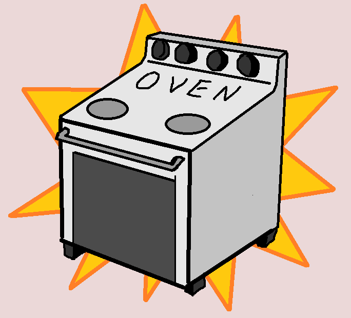

Preparation is one of the most important parts of baking because it keeps the recipe organized and easier to follow. Before mixing ingredients or turning on the oven, make sure everything is measured, prepared, and ready to use. This step helps beginners avoid mistakes and makes the baking process less stressful.

Preheat your oven to 350°F (175°C) before starting the batter. Preheating allows the cake layers to bake evenly from the beginning and helps create the correct texture.
Lightly grease two round cake pans using butter or cooking spray. You can also place parchment paper at the bottom of the pans to help prevent the cake from sticking after baking.
Measure all ingredients before combining them together. Baking depends on accurate measurements, especially for ingredients like flour, cocoa powder, sugar, and baking powder. Preparing ingredients ahead of time also helps the recipe move faster once mixing begins.
Try placing your ingredients into separate bowls before baking. This keeps the recipe organized and makes it easier to follow each step without forgetting an ingredient.